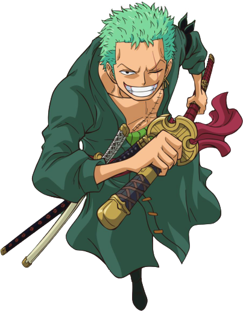
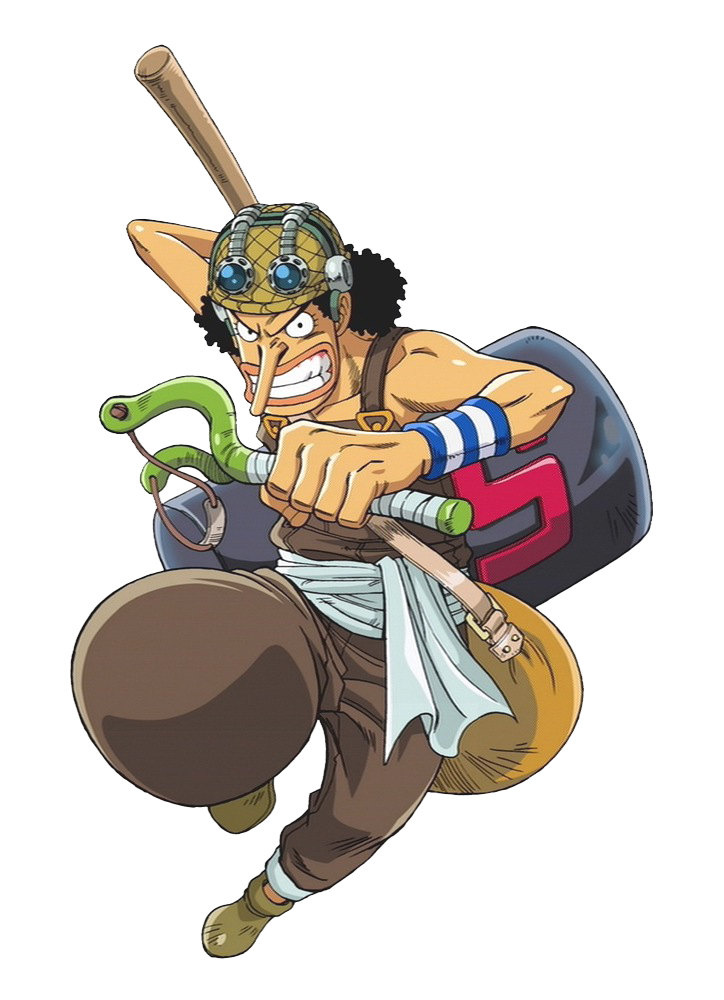

-
Monkey D. Luffy
ONE PIECE

Descrição
Monkey D. Luffy, é um personagem fictício e o protagonista da franquia One Piece criada por Eiichiro Oda. Ele é apresentado como um jovem cujo corpo ganha as propriedades de borracha após ter comido a Gomu-Gomu no Mi, uma das várias frutas amaldiçoadas conhecidas como Akuma no Mi ou Frutas do Diabo.
-
Roronoa Zoro
ONE PIECE
Descrição
Roronoa Zoro, é um personagem fictício da série One Piece criada por Eiichiro Oda. Na história, Zoro era um caçador de piratas que por fim se torna um quando é convencido pelo protagonista Monkey D. Luffy a ser o primeiro membro de sua tripulação, os Piratas do Chapéu de Palha.
-
Usopp
ONE PIECE
Descrição
Usopp é um personagem fictício da série em mangá One Piece criada por Eiichiro Oda. Ele faz parte do grupo principal, os Piratas do Chapéu de Palha, onde atua primariamente como atirador mas quando necessário cumpre outras posições como inventor, escultor e pintor.